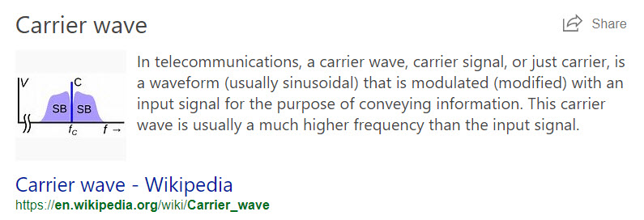
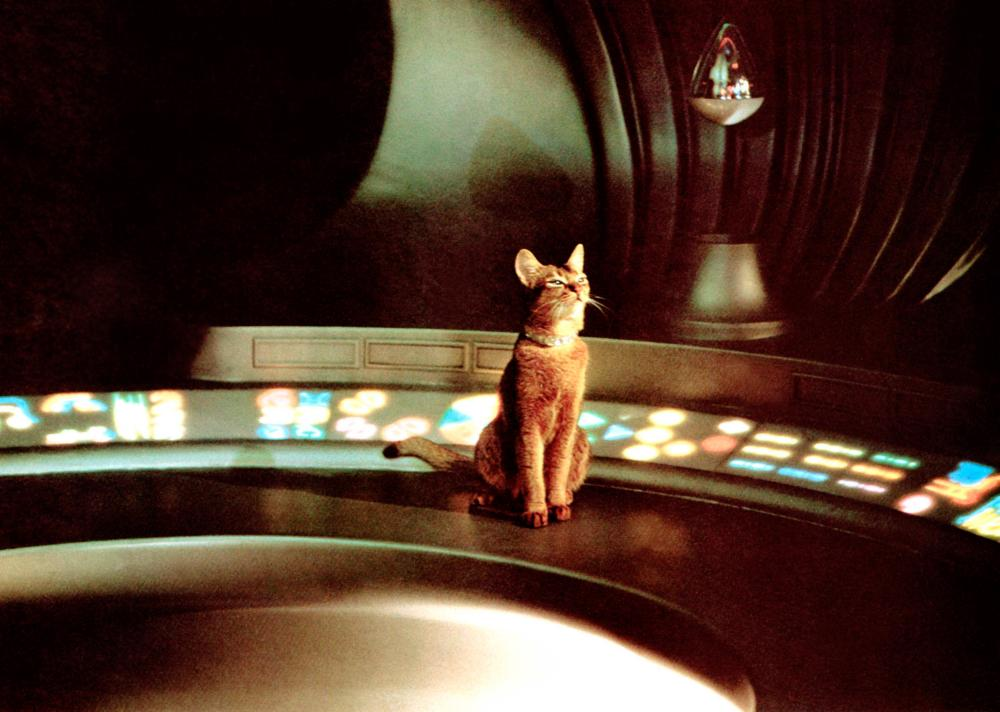
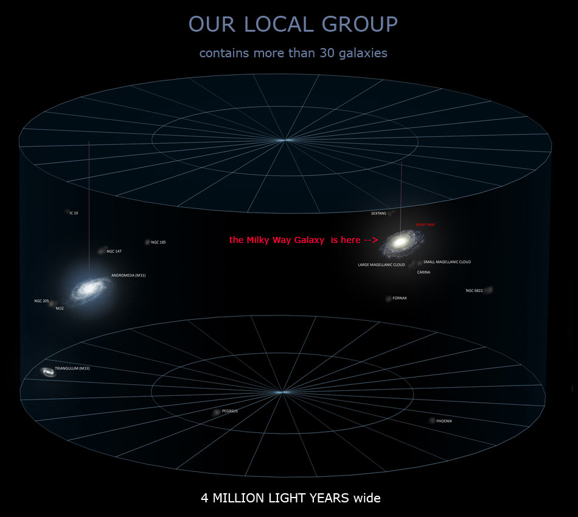
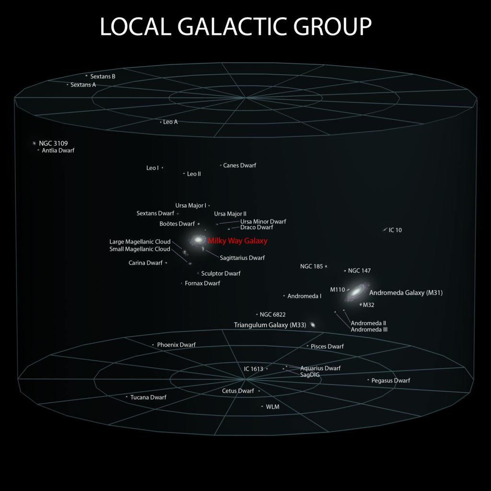
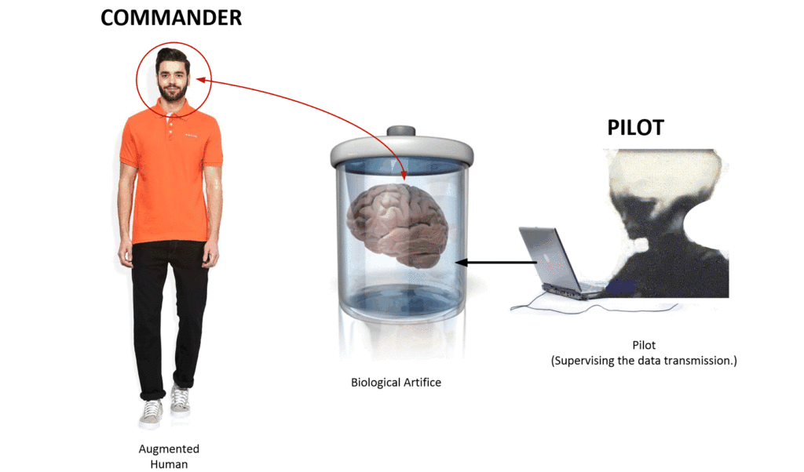
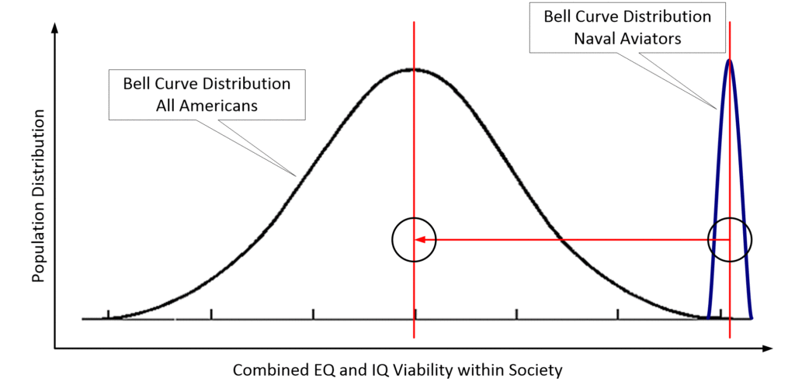
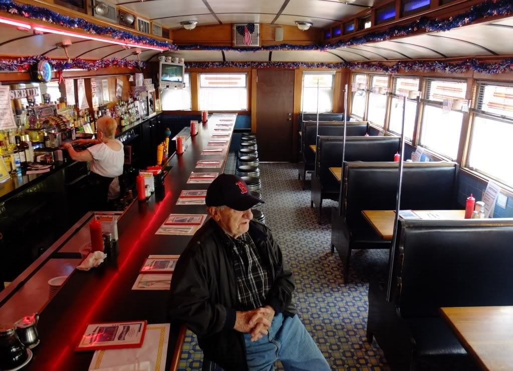
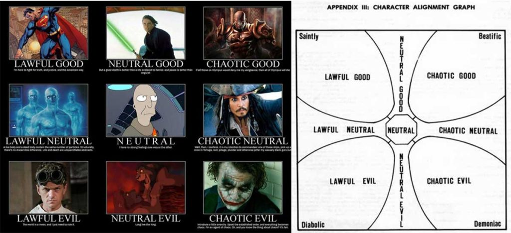

Here is a continuation of a dialog with an influencer. Provided for your interest and consideration.
The discussion continues…
Conversely, they COULD have killed you instead of just driving you into defacto exile. From the government’s perspective, I’d hate to be the bureaucrat on-the-hook if you were to ran amok with your implants and all. It certainly is a shitty life sentence you ended up with but I definitely feel your pain! If your story is true (I think it is), I’d like offer my support in gratitude of your service to country. Besides, maybe your benefactors would look well upon my friendship towards you 😉
About my retirement. I haven’t written about this, at least nothing that I published. But they DID try to do something other than exile. It’s a story that needs to be said, but I have a very difficult time grappling with it. So, I just think that now is not the time to mention it. It would only “muddy the waters”.
Looking back, I should be happy that things worked out as they did. Evidence shows that things could have been much worse for me.
During the retirement procedure, there were (other) efforts to terminate my role more effectively. However, the EBP enabled me to side-step those efforts. (Maybe that’s exactly the kind of thing that the folk in Washington were afraid of… Nah. The retirement team had absolutely no idea of what I was involved in.)
As far as I understand it, I was going to be retired no matter what.
This was a fate that I signed up for, even though, I had no idea about it. There wasn’t much that I could do about it, except… I could (through my MAJestic training, sidestep the non-MAJestic operations and) select how the retirement sequence would manifest.
Believe me, I took the easiest and safest route.
And so here I am.
I have a big write-up on the actual retirement procedure in Pine Bluff, AR. How the respective agents were flown in, and the reactivation of the ELF probes while I was tied down in a safe location. It’s a pretty comprehensive narrative, but now is not the time to publish it. It’s all written from my point of view and it is really confusing.
It is very confusing. Sort of like the movie “Naked Lunch”. It’s a very difficult read to follow, as my experiences lay outside my physical experiences as viewed by everyone else.
When we watch movies, we watch it from a third person perspective. But no one could possibly view my experiences with any kind of rational understanding as it was all in a first person perspective. So it is very, very confusing.
Look at this scene below. Can you understand what is going on in it?
Anyways, thanks for your heart-felt concern.
I had a very strange and ostensibly missing-time (about 3 hours) dream last Tuesday night, that’s never happened before!
That dream of yours is very interesting to me. It really is.
First of all dreams are many things. Fundamentally, it is just the brain relaxing and the brain memories firing and imagination going off in tangents. That’s just plain old innocuous dreaming. But, if you are in certain states of mind, it can be other things; more critical and active things. For instance, when a loved one passes on, they can come and visit you.
That’s a great example of this.
An experience we had while we slept.
When I was in my Senior year at Syracuse, I was crashed out with my friends Jay and Peter in their dorm room. One of our friends, Marty, had died suddenly three days earlier. He was playing football. He had a brain aneurysm and died. Now, I knew him, but I wasn’t as close to him as Peter and Jay was. I knew him by his nick-name “Rhino”. What he would do is head-butt everyone he met. So that’s how he made friends.
Anyways, three days after he died, at around 4am, Peter, Jay and myself all woke up simultaneously. It seems that Marty had visited all of us in our sleep. He told us not to worry that he was fine and happy, and he was saying good-bye to us for now. The thing is that we all all immediately woke up simultaneously at the same time and had similar (if not the same) dreams.
What you can take out of this is that consciousness (of one person) can access the minds, thoughts and memories of others through dreams.
This means of providing information to the brain, directly by consciousness exists. It doesn’t need to be a close friend or loved one that died. It can be through artifice, like my EBP, or through ELF radiation via the ELF probe kits. It can also be through other consciousnesses and other entities that have the necessary permissions to do so.
The “Guardian Angel”.
Everyone, that is every human, has a “guardian angel”. This is an entity that goes by many names; Spiritualists, Angels, Mantids, and the like. There are paintings of these creatures as tall and big beautiful human-shaped creatures with wings.
The artists took a great deal of artistic license in painting the creatures. They painted them as large humans, often male, with wings, handsome and often possessed a halo or other heavenly “signature” around the head.
In all actuality, they are a species that protects our human species. They are invertebrates. They are multi-dimensional. They work for a higher purpose.
They and they alone have the necessary permissions to access your consciousness on anything more than a trivial communication level. Loved ones can communicate, but the transmission of more complex forms of data is restricted to those with permissions. When the more intense data-streams are provided, you will be able to recognize it through one or more of the following experiences..
- Dead-sleep. No dreams at all. A big blank of zero memories.
- Intensively different and vivid dreams, with sounds, colors, and smells.
- Dreams about attending schools or educational institutions, etc.
The mechanism for “special dreams”.
This is the mechanism how these “special” dream conditions manifest. It works like this…
Now, when a person is exposed to a new kind of knowledge or experience, the mind and the consciousness comes to grips and tries to understand that information. This will result in different thoughts, and dreams.
Now, these thoughts and dreams can be thought of as a kind of “prayer”. You aren’t trying to ask or pray for anything. But, what is happening is that you have set up a “carrier wave” that your “guardian angel” can notice. They, in turn, adjusts your Earth experience to fit.

This tells me that your path in and out of the various realities; your “time” had been altered and it had a course correction and a new vector. It will direct you to something good, for you on your own personal level.
What it is, I don’t know. What I can tell you is that is a very good sign.
The Progenitors.
Tell me more about the progenitors if you don’t mind?
OK, now about the Progenitors. I know of them, but what I know is rather sparse.
They have “seeded” this section of the galaxy many, many years ago. Maybe one billion years ago.
This means that they have “planted” rudimentary lifeforms adapted to the environment where planted. This meant that they took some kind of basic “primordial biological stew” (a biological template) and mixed it with various promising local native life. Thus, creating a kind of pre-species life that would eventually become some kind of intelligent native species.
When they were involved in this procedure and operation, they had physical bodies, and traveled in vehicles.
I do not know what they looked like. I have no idea about their appearance, size, or biology in any way. For all I know, they could be telepathic cats. I just do not know.

They went all over the galaxy and traveled far and wide. They planted “kits” of biological entities. These kits were merged with local life and created very early life-forms.
Sometimes the life-forms survived and grew. Other times they died off. The progenitors were aware of this, and while they hoped that the life forms would grown, they recognized that they might not take.
This species traveled far and wide in our galaxy, as well as in other galaxies! That I do know.
They were active in seeding the universe, at least in our corner of it. The impression that I have is that they were involved in this activity long AFTER the (initial primary) sentience disruption period, but long before any kind of local galactic government formation.

They (might have) periodically came back to check and revise their creations. But I don’t know if this ever happened with our Earth.
What I do know is that they transitioned into non-physical multi-dimensional entities at the same time that the Mantids were active and alive on our planet. I believe that the two species were aware of each other, but I do not know if they ever collaborated together, but I do know that the Progenitors sort of “passed on the torch” to the Mantids in regards to human care-taking.
Whatever happened between the Progenitors and the Mantids, the Mantids now have a major role in sentience evolution of humans on the Earth.

There are ruins and some progenitor artifacts laying around in our solar system, but I do not know where they are or what they would look like.
Write a book?
You should write a book, maybe: “Gray Agenda”. You’ve already got the manuscript basically done. The description might be: “A first person account of the intentions the extraterrestrial races have planned for the people of Earth” (or something along those lines).
Writing an allegory about classified events IS legal as long as no one is named or harmed in the process (ie “Sebastian”). Besides, you never signed an NDA plus I believe that you are currently the highest declassification authority within in your compartment, anyway. I’d buy it!
About the Slides.
On the other topic, are there no “black-hat” (bad guys) out there? What about evil, the devil and such things, you must of run into such things in your “slides” to alternate realities?
You never actually discussed how the “slide” occurs and when things look like while in transit (more gray wall)? Would love to hear about that too!
Oh, you have opened up a huge keg of worms. I will respond to this, but where all my other correspondence was extraterrestrial studies 101, this enters in to the realm of “OMG, where do I begin?”. It’s really out there.
If you think that what I have already disclosed is far-out, you have no idea, how far “down the rabbit hole this thing goes”.
I’ll respond better once I gather my thoughts and I will do my best to keep it simple.
Firstly, [A] please take note (and take heart) that I am and have always been, protected by the Mantids. (You can kindly refer to them by the moniker of “Angelics”, if you wish. I like to think of them as Guardian Angels.)
I look at it sort of like this;
You have a five year old that wants to walk all over the place, but has no idea about roads, trucks, ferocious dogs, and bee stings. You want to protect the five year old, but you don’t want to overly coddle it. The child has to learn, don’t ya know.
It’s sort of like that.
There were so many times that I could have ended up in automobile accidents, getting a serious illness, lost a loved one, or had my very being disassembled and parted-out to other entities. Listen, it’s a dangerous world out there, and it is way, way beyond our ability to deal with alone.
As much as I would love to chat about this, you [B] also asked about the slides.
Now, that is an encyclopedia in itself. I’ll tell you what. Now, today, I don’t think nothing about it, but it’s actually a complicated process.
Implants, probes, EBP & ELF operation.
The ELF probes monitor the actions and activities for the MAJestic organization present in the reality that I inhabit at that time.
The EBP device is itself, timeless.
The EBP device is not a “stand alone” mechanism. Instead it is a “cog” or an “I/O” device that interfaces with other mechanisms.
These other mechanisms are quire complex, and I know exactly zero about them. However, what I do know is that the next most important element that the EBP interface with is a biological artifice.
Fundamentally, the only way that the EBP can work is when it operates though use of an artifice. This artifice is biological in nature. It it is not enjoined with that artifice, then it cannot work. It is just “dead”.
Now, you might think of the EPB as a computer or a complex electronic mechanism, but that is incorrect. It is a biological computer with a dedicated function. It connects to another biological device; the artifice. It, in turn, is controlled by a extraterrestrial “pilot”.
Stranger and Stranger
If you are a species that can access the MWI at will; the ability to traverse world-lines, then you can secure your operations in places that are safe and secure from others.
As such, this artifice is located on [A.1] another planet, that resides [A.2] within another reality. Think of it as another “world-line”. A species that can move in and out of world-lines has the ability to place critical infrastructure on “safe” and “protected” world-lines.
In other words, it’s really hard for some highly motivated contemporaneous oligarch, like George Soros (for instance), to tinker with operations HQ located on the planet Mars. That is most especially true when the planet Mars, and the HQ is located on a world-line where the Earth did not exist.
So, I m a “Commander” who works in behalf of the arrangements with MAJestic. The operation of the process is controlled via artifice with a controller who I refer to as the “pilot”. The pilot is of the type-I grey species, but the artifice links to the Mantid species “thought highway”.
Of course, my terms are really weird. Simply because there are no terms for this in the English Language.

It gets complicated.
For the longest time, I was under the impression that the type-I greys did not have the ability to recognize world-line slides and what happens. I thought only the Mantids know the entire process and procedure that I am involved in. I was under the impression that only the type-1 greys operate the technology.
Now I am not so sure.
I will talk about this in much more detail. But I feel that I have overwhelmed you in the process. So let’s stop here, for now.
White Hats.
No, I knew about the bit players like the Mantids and the Grays but never knew how they fit into the puzzle, I take it they are the white-hats?Are you familiar with the Tall Whites and Charles Hall’s story?
I don’t know anything about the Charles Hall story. At least, as I recall. I will check it out on the internet and get back with you on it.
- DISCLOSE THIS! – Viewzone
- Further Investigations of Charles Hall and Tall Whites
- Charles Hall Says Tall White Aliens Have Infiltrated Society
- Interview with Charles Hall- Motivations of Tall White ETs
I went through the above links. No, I have absolutely zero experience with this species. I have nothing that even resembles any of this. However the writings are quite interesting. It’s not the kind of stuff that an author or hoaxter would come up with. Even though I have zero experience with this species, I DO KNOW that MAJestic has been working with numerous species.
"He explains that the pencil weapon can be used to stimulate calcium atomic frequencies to cause great pain like being burned, but one was not actually burned. When the iodine setting is used by the stun gun it can cause one to bleed to death. He compared this to the black plague when people would bleed to death due to arteries being weakened and blood would leak out causing death. In an email, Charles clarified how the pencil weapon works: “The pencil weapon could be set to stimulate the atomic frequencies of Sodium, Calcium or Iodine. Stimulating the Sodium atoms caused immense pain because it caused the nerves to discharge. If the weapon is set high enough, it can cause instant death. Stimulating the Calcium atoms caused the reverse (i.e. sleep, calmness, relaxation etc ) because it causes the nerves to reset and relax. Stimulating the Iodine atoms, of course, as described in book three, causes death by internal bleeding because it causes chemical changes that allow the blood to pass through the walls of the arteries in and around the thyroid gland.” "
-Exopolitics
The “Tall Whites” are NOT the Mantid species.
The type-1 greys are an intermediary that carry on work for and along the purposes of the Mantids.
A typical slide.
Take me through a typical “slide”, does conservation of mass and energy hold in the MWI, sounds like not?
Conservation of mass and energy holds true only within a given reality. Reality slides are movement from one reality to another. The consciousness moves, and when it does it does so in the form of waves, as opposed to particle, form.
Each reality is ψ-epistemic. It is a self-contained reality that runs from nothing to nothing, with all kinds of things going on between those two points. There is a near-infinite number of realities that exist. these realities exist in a universe or baseline structure. This universe is ψ-ontic .
You can move from reality to reality in all sorts of ways.
The most common is (of course) “the arrow of time”. We, and those around us think and process thoughts. All of this constructs the next momentary reality that our consciousness inhabits. It is so ingrained in our mind that we just move about ahead naturally with little in the way of thought consideration. We consider it “natural’. That is, because it actually is natural.
The second way, is “dimensional travel”. You can “jump” through one reality into another. This can get complicated. As you need to know where you are, and where you want to go. You need coordinates in a minimum of 11 dimensions (as far as I understand).
My first slide was through a “dimensional door”, and it was exactly as I described it. You disappear into thin air, and reappear elsewhere. If you are walking through the egress tube, you will pass through something that would appear to be a curtain of water, and when you exit it, you will actually feel wet. Then, it will be as nothing happened.
There are “grades” or techniques of this kind of travel.
- Dimensional portal
- Manufactured bubble (as in a vehicle)
- Manufactured bubble (as in a small handheld device)
- 7th dimensional entry and egress.
- My EBP artifice supported travel.
I have written about all the other kinds. You have the dimensional portal travel the MAJestic uses with the type-1 greys. You have the manufactured bubble travel such as the John Titor saga, and the mysterious woman in the aluminum foil coat. You have the 7th dimensional entry and egress as shown by the mystery woman in the airport, or the bicycle riding man in Russia. And finally, you have EBP directed travel.
Almost all of my experiences is via EBP. So my slides are going to differ from any of the other methods.
The EBP, firstly gives me the ability to see my reality normally, as well as to “sense” other nearby realities. I can, for instance, sense realities that can be harmful to me, and other realities that will be great for me. This gives me a greater degree of control in the overall immediate direction of my life.
These realities are momentary visions. They pop in and out, and jiggle about. They are controlled by thought, and the surrounding physical environment.
As cool as this sounds, I am handicapped in whether or not I can take advantage of any potential reality directions that are presented to me. That is because my ability to travel about these nearby realities can be locked in or out by the EBP artifice. Yes, the “pilot” can make sure that I am steered in the right direction so that the Mantids Type-1 Greysvget the most efficient benefit of my actions and activities.
Which really sucks. You know, you see an “opportunity” and it is right there if only you do XXX or YYY. You can see it plainly.
Yet as soon as you want to do XXX, the EBP locks you out.
Why it sucks to be me.
They have always wanted me to represent “average”. Not “average” college graduate. Not “average” Naval Aviator. Not “average” type-A personality hard worker…. no. They want me to be entirely “average”, from the most slothful lazy jackass to the most aggressive rich oligarch billionaire.
Average.
Which means, and one thing that I really resent, is that they took Sebastian and myself (above average in intelligence, skill sets, and motivations) and put us in a situation where we represented the average person. Which is far lower in intelligence. Far lower in skill set. Far lower in motivations.

No matter what I would want to do, and no matter that I could clearly see how the realities would open up, I would be locked out of the opportunities in order to maintain my role within MAJestic.
Anyways…
How it worked.
The MAJestic pilot would control the artifice in such a way that the course that I am to follow and the world that I am to experience is mapped out. In a non-MAJestic world, I might have a path that would go A-B-C-D-E-F. But, in MAJestic, my role would be for me to experience reality Z.
So the pilot would map out a path that would be A-B-C1-E2-G5-T8-X-Y-Z.
The adjacent realities that I would experience could sometimes deviate quite substantially from my previous reality. The deviations are immediate and you don’t really know what is going on except what you “feel” and the over all “sensing” of the situation. This is true, even though there are some visual clues that the EBP provides.
Let’s relate an experience that I had years ago, and use it to illustrate how the system worked.
It was back in the early 1990’s, I don’t remember when, but let’s imagine that it was around 1991 or 1992. I was in a roadside restaurant with my wife. It was a local diner, not a chain diner like the Waffle House or anything like that. Just a normal glass walled stainless steel box with a counter and booths along the windows.

A normal person would go in, order from the menu, eat, pay and leave. The process would be pretty predictable and would be along the lines of A-B-C-D-E-F. After a 45 minute span of time, the man would be at reality F.
For me, however, it would be different.
My objective was to occupy reality Z after 45 minutes in the restaurant. To do this, the pilot would send me; the “commander”, along a different reality track. I would “slide” along a different route to my destination. I would go A-B-C1-E2-G5-T8-X-Y-Z.
I entered the diner with my wife normally. Now, you know, I knew that I was dealing with slides immediately. I could feel the differences. I could sense the changes. There would be different smells for starters.
After we looked at the menu, I ordered a hamburger platter with fries and a cup of coffee. My wife ordered some eggs and toast. The restaurant smelled like a normal restaurant, but then I started to notice that it smelled strongly of curry, as well as raisins. It was like you were walking around the booths of an international fair full of exotic foods and flavors of the world. It no longer smelled of hamburger and fries.
It smelled of lamb and curry.
The waitress brought out our dishes and I was eating a curry-gyro with rice, and a tall glass of white wine. My wife, who now had a really dark tan, was busily attacking her tuna-fish salad. As we ate, I started to notice that the normal day started to variate in a substantially different direction. The sky was no longer blue, but it was a glaring white and people were rubbing their eyes. The girls were also trending towards long skirts, and the guys were no longer wearing tee-shirts, but rather plain white button-down white short-sleeve shirts.
By the time my meal was finished, it was back to a half-eaten hamburger, but I was drinking coke instead of wine or the coffee that I ordered. My wife was full from the taco-salad that she had, and her skin was back to being light color. She and I were both wearing tee-shirts again. Though, they were “newer” than I recalled before the dive. She also now was a smoker, while before we went into the restaurant, she did not smoke.
Our car was back to being the same as it was, except that the car was a little wider than it was before, and on the drive home, there were some roads that were missing. I went home and discovered that I had an extra cat in the house, as well as some bills that apparently needed to be paid (yet again). In this 45 minute interlude, I dove to reality Z, via really odd-ball realities to get where I needed to go.
The need to dive into really strange realities has always been a kind of mystery to me, but the real reason is that we can only travel into adjacent realities using the EBP. To use this method, you need to dive into really strange adjacent realities to resurface into a nearby objective reality that would be prohibitively difficult for me to reach otherwise.
More questions.
Very fascinating, did you know before hand there was a slide planned for that day?
No. I never knew. They just happened, and I rode them whether I liked it or not. They came at all hours of the day and at night.
Generally they were not disruptive in any way that was life threatening, but they were discordant. You could be watching a movie, and find out that they movie changed during a slide. For instance, in this reality Roxanne is a comedy about a man with a really big nose. However, when it first came out, the reality that I was in as different. Instead of Steve Martin being the lead actor, it was John Candy.
What were/are the Mantids trying to do, stabilize the overall reality streams? Maybe reduce the probability of war (say)? Increase human awareness or sentience? Move us more towards “Service to others” soul types?
I really don’t know for sure. No one ever told me anything.
What I can sense is that the slides were [1] important. They [2] assisted the Mantids in gauging the direction and situation of the “human condition”. This enabled them [3] to alter trends and reality via the MWI for a portion of the population. (No, the human population does not share similar realities. Instead they play the percentages. Thus, forcing me to ride the “averages”.)
[4] The type-1 grey had a role(s) as a pilot. He followed the direction from the Mantids, and used their abilities and interfaced with the Type-1 grey technology. This required a biological artifice, but how it all worked, I haven’t a clue.
Now, they (the Mantids) did not care if humans suffered. They did not care if humans prospered. They did not care. What they cared about was the general direction of human sentience. Why they would have been pleased if all humans moved towards to “service to others” sentience, they never expected that to ever happen. What they wanted to do was “push” the conditions of the MWI reality shared by many human consciousnesses towards the consciousness that they are most likely to migrate towards.
The type- greys did not care either. What they wanted was to identify those humans that would migrate to the “Service to self” and “service to another” consciousness so that they would then work onto either farming them as an adjunct to their species – a sub-species (farming or being farmed), or being assimilated into their hive or matrix soul configuration.
Some might have this happen quickly, but my understanding is that it might take many reincarnations. The push to ride the slides was a way to monitor the evolutionary process.
So once you were “in” the slides from A-B-C…n, it just kept coming until they were done? That must have been maddening!
Yes it was. Sometimes I was horrible and I really would get frustrated. But, in some way, I do not know how, the pilot was able to predetermine just how far I could be pushed. It would be rather counter-productive to have me kill myself because I thought I was mad.
Imagine that you really want to eat pizza. All day you are looking forward to having pizza. You sit down and eat pizza in a restaurant, only to find out that in the current world-line pizza consists of pizza bread covered in corn and ketchup. Or when you go to work and find out that the project that you have spent the last four months working on had never existed, or discovering that your pretty decent boss was replaced with a jack-ass. Or, buying a new car only to have it revert to a distressed clunker. Or, getting used to paying in 2 and 3 dollar bills and discovering that in the current world-line they never existed.
Or winning the lottery (not a big multi-million dollar payout, but $1000 is big news), and suddenly finding out that you had never bought the ticket in your new world line. Finding out your sister had four children not five. Discovering that you now had different musical tastes on this new world line, or that your wife was suddenly allergic to popcorn (so she wouldn’t ever go to the movies).
In general, the most important aspects of life remained pretty much constant, though their appearance might change. Loved ones, friends, pets all pretty much didn’t change that much outside of appearance.
Your wife might have long black hair, then she might have short curly hair. Stuff like that.
7th dimensional egress.
BTW, I think that Russian guy on the bike materializing is actually an artifact of how digital video works, I think he was riding from a direction where the camera software had aliased the area as blank (no change between scans) to an area where it was actively recording (the left side), that’s why he seems to suddenly appear from behind the person walking. You see this all the time on YouTube videos, where someone pops into frame because the camera software just noticed them moving (a change between scans). Sometimes though, it captures something on the unexplainable side, those are the weird ones (like a leprechaun, or little person or ghost thing running by, there’s LOTS of them too). The ones where someone just “pops” in are mostly due to the way digital video process images though.
This information about the guy on the bike is something to think about on numerous levels. I do not have all the answers just some perceptions given my previous experience.
You know, if you rode a bike you could explain to non-bike riders how much fun it is, and what it is like to have the air on your face. You could talk about putting air in the tires and so forth. Maybe you would not know anything about motorcycles, but you could guess with some degree of accuracy. I would think that its sort of like that.
The only point I was making about the “pop-in” videos is that most are easily explained as an artifact of how digital cameras work, that’s all.
This could very well be true. I need to think about it. The problem that I have about this is that the images show that this “artifact” is selective in application. Why so, if the point of view of the camera as an observer is just different hued pixels?
More on slides.
Gyros are good but I would not like curry pizza, that I know for sure! 😉
Actually, I never had any idea of when a slide would materialize. It was always without notice and could come at the most inconvenient times.
I well remember once I was giving an important presentation. The managers above me were all in the room, and I turned to the white board to draw an arrow on a sketch that I had been working on only to find the board was blank. I then turned around and the room was empty. I was in a reality where I wasn’t giving the presentation.
Yes, it was maddening. In fact, if I didn’t know better, I would certainly believe that I was loony-tunes.
The why.
As far as to the why… well, no one ever told me anything. I have only come up with my own understandings. I do know that the type-1 greys would be tickled pink if they could harvest a large portion of the human population over to their sentience. They would then partition them out as either assimilated co-drones, or as farmed sentience’s. Ohhhh. That’s a horrible fate. They would be farmed for their experiences, and then the quantum associations would be excised and extracted, and they would then live another experience, but without ever obtaining the quantum arrangement benefits. Yuck. They view this transitional period much longer than we humans would recognize…say 500 years or so.
The Mantids are moving a pace and expect to assist in a sizable portion of humans towards a different kind of sentience. This sizable number would be smaller than any number harvested by the Greys.
Both species recognize that the human species are a transitional or temporary species. We will evolve into something else. The path that we will take will be one such that there would be but three ultimate destinations.
The lowest of the “service for self”, and many of the “service for another” would eventually evolve towards incarnations as “farmed sentience’s”. This would be life in Hell. I am not at all kidding.
The type-1 greys.
The Grays sound distinctively demonic, based upon your experience. I have heard of other stories where people have evoked the name of Jesus while being abducted and they have frozen on terror, now why should an alien from a difference star system have any care about the name of Christ if they are not demonic in their orientation?
I have also read about Russian Orthodox priests who state that there is no element of the Gray Aliens that doesn’t sound satanic in their actions and properties.
I do not know about involing the name of Jesus.
But, the vast bulk of humanity, would pretty much evolve towards a “service for self” sentience as it would fit within a Type-1 grey hive or matrix soul configuration. In that case, it would be sort of like “Purgatory”. There would no longer be an individual soul that they would advance, but rather they would be part of something else. They would function as a tiny gear in a huge and vast machine (metaphorically speaking).
Those that are “service for others” would advance to a new higher-energy sentience and would transcend the physical reality. Ultimately becoming inter-dimensional beings, and closer to “God”. It would be like living in Heaven. This is what the Mantids are working towards.
The dives.
These dives that I was involved in, differed from a regular slide. I like to think that a slide would be a minor alteration of my reality, as they often were. But a dive was a series of slides that went all over the place (with different realities), eventually wrapping up at a different point. I think that the dives were necessary because, otherwise I would choose or select a reality that might be personally harmful to me personally or detrimental to my MAJestic objectives.
For instance, I might get fired, when it was necessary for me to continue working at a company. Or I might get tangled up with some chick, when it would result in me getting hurt or ill. Or, I might end up in the wrong place where I would die in a car accident. To move me around and avoid these circumstance, I had to be placed on dive detours. Some of which were really crazy. I related the deep dive that sent me into a really alternative reality, but there were others. Many others. I lived this life for three decades. Ugh.
The Greys as Borgs
That taken with your logical rationalizing about the Hell experience the selfish human souls being “farmed” into by them and end up makes me arrive to the same conclusion. Their Gray-Borg farm is a loser for humanity, sounds like to me, how about you?
So, I don’t want to be insulting but from the sound of your past experiences, I think you were being used (big time). They signed you up for something that in 20/20 hindsight, you would have probably declined.
The Grays do strike me as serving evil, there are many traits they seem to exhibit that confirm this: Their collective matrix-soul over the responsibility imparted to the individual, their disregard for the holiness of the physical body, their manipulation of humans to feed their psychic hunger, their consciousness splitting technology, it just goes on and on. Then there are the observations of other people who have studied this phenomenon such as Dr. John Mack and other ufologists. The conclusion is pretty obvious, they feed on us and the negative psychic energy they produce through us for their own appetite.
See:
http://orthodoxinfo.com/praxis/alien_abduct.aspx
The effects of these abduction experiences on the personal transformation of abductees are very clearly enumerated by Dr. Mack (p. 48-49) and provide us with clear insight into the psychic and spiritual dimensions of the abduction experience. Once the initial terror of the experience subsides, and with the sense of familiarity or comfort that repeated abductions foster, abductees report profound changes in their philosophical outlook and understanding of themselves, others, and the world around them.
Dr. Mack identifies eight stages in this process of change:
1) The individual begins to accept the aliens and experiences what he calls an "ego death."
2) Abductees come to regard their abductors as "intermediaries...between...human beings and the primal source of creation or God."
3) They begin to think of their experiences as trans-temporal and trans-spatial, as "returning to their cosmic source or ‘Home.’"
4) The individual begins to feel that he is himself an alien, when he returns "back" to Earth.
5) Abductees come to understand existence in terms of "cycles of birth and death over long stretches of time."
6) The individual forms a feeling of "identification of consciousness with virtually endless kinds of beings and entities."
7) Abductees develop "a double identity," associating their souls with an alien identity and their personalities with a limited human self.
8) They report functioning beyond what they often call a "veil" and describe "being in multiple times and places at the same moment," among other things.
and…
http://www.holy-transfiguration.org/library_en/sc_ufo5.html
Well if you don’t want to comment, that’s alright, I understand (to a small degree) how hard the past 30 years must have been for you.
I do agree with you, but for some reason I am having difficulty in seeing evil. I am going to check out those links.
Opinions on the Greys.
From my fresh-eyed look at your experience and information listed plus what I have aggregated myself, I see the Grays as human soul hunters. They have been with us all through our history in one form or another and always from a negative understanding (evil).
Have they given us a cure for disease, a cure for cancer, a cure for hunger, mutual understanding and brotherhood among mankind, better water purification, free electricity in the form of nuclear fusion or some other means? NOPE!
They have provided vehicle technology for our study and reverse engineering efforts. They have provided us dimensional door technology. They have been working with MAJestic on human DNA manipulation, and mapping. They have helped and assisted on non-lethal weapons systems.
However, they have most vigorously quarantined us from lunar exploration back in the 1970’s.
Slides to maximize the “hunting” expeditions.
Your slides seem to be their attempt to manipulated the time-lines in order to maximize the success of their hunting operations. They feed off of our suffering, selfishness and bad psychic energy which they use their technology to enable, that strikes me as pretty evil (no?).
It is certainly very selfish. It is certainly “service to self” behavior. Whether or not it is evil from their point of view, I don’t think so. They seem to think that they are helping us as part of a greater plan. And, as part of that, some people are going to be hurt for the greater good of all.
Evil is as evil does.
There isn’t a single incidence ever recorded in our esoteric history of one of them helping us, every culture records them as bad. Even in modern times such as in the “Journey to Serpo” story, they only help us in order to help themselves screw us better.
Are there any times when they helped you for purely unselfish reasons? I don’t know man, they sure seem demonic to me!
This is an angle and an idea that I have not thought of. I am still digesting the links that you gave me. I cannot say that I disagree with them, it’s just that the viewpoints are different from what I have accepted. I am still digesting them, and I do see some real truth there. There is nothing that I disagree with.
It’s that I am coming to grips with the idea of “pure evil”, when in my mind it is all neutral.
A “service to self” sentience is that way because it is the way it is. To me, a “service to self” sentience is inherently evil from a person who’s sentience is “service to others”. By looking at it this way, you can easily see who is who in the various roles.
I see a snake as a “service to self” species. They go about their life taking what they need and doing snake activities. They are all self-absorbed in what they want and cannot conceive helping others in any shape or form.
But, yes. You are absolutely correct. They do feed off our suffering. The thoughts generated during conflict create associations with the quanta and that means the construction of specific types of garbons. The more suffering, the greater the yield. Eventually they will harvest the “ripest fruit”. Now, I do know a little about this.
They are selective. They just do not want just any “fruit” or fresh garbon, to harvest. They want specially constructed ones, and they really want the ownership of the individual that creates such thoughts. Then they could farm and harvest at will. Over time, that person would migrate towards more, and more severe “service to self” behaviors. At that point in time, through reincarnation, they can then migrate and have the soul reconfigured from a (non-approved transitional) configuration into matrix or hive configuration from which they can assimilate into their Borg-like collective.
So, here is where I am trying to understand them. Remember, I have no answers. Just experience. To me, they seem to be “Lawful Neutral”, or “Lawful Evil” from my point of view, with “Neutral” and “Neutral Evil” being strong possibilities FROM MY POINT OF VIEW. From their point of view, I would think that they see themselves as “Neutral Good” or “Lawful Good”. Perceptions on this comes from our consciousness within this reality, as such it forms thoughts. How the thoughts arrange affect our individual soul growth. That is how it is all tied together.

This is an interesting thought stream. Need to ponder it some more. I don’t think that they are Demoniac, though it is a real possibility that they are Diabolic.
The idea that they might have intentionally forced me to endure trials and poor-assed experiences so that they could personally harvest my own garbons never actually occurred to me. I need to think about this more.
As you have a very good point.
I do believe that while my slides were for the purpose of sentience evolution for the purposes of the Mantids, it is also very… very possible that the Type-1 greys would also configure the system for their own profit. Which means that my MAJestic operations were to the benefit of both species, and that anything that I endured will be harvested later and I would obtain no benefit from it personally.
It gives me a sickening feeling. I need to think about this more.
The process.
While it is true that you can’t be forced into doing something against your will, you CAN be tricked into doing it. Figure this: The Grays get to keep the psychic energy they turn and their master gets the soul. Sounds like the nature of the deal, no?
Yes, that’s pretty much how it works, more or less.
DNA discovery.
It’s been recently discovered that DNA has a quantum signature in its election cloud and there are ~9billion base pairs per molecule and trillions of trillions of molecules per person, that’s A LOT of qbit energy man!
This is interesting stuff. I would be interested in following up on this stuff about quantum signatures in the electron clouds of DNA.
On animals.
On evil, a snake is an animal and animals have no choice, they can only be what they are so they’re neutral. True snakes do kill baby birds and cute bunnies but they do so as a means of control over the population of their prey, not out of any malice or advantage over another. To them it’s just eating, seems to be the way the Grays regard mankind?
The Grays may have helped engineer our evolution but they must obviously see that we are NOT animals and must be given a choice in life but seem to lack such an ethic. “The Journey to Serpo” (if true) seems to indicate that the Grays have about the same regard for the sanctity of life as we might over an upgraded computer, it’s just hardware to them. The story goes that they took one of the human crew that had died on the journey and used his body to engineer some sort of clone without any regard for his body or seeking permission from the commanding officer, just took it like it was an old piece of hardware. Those warm feeling of love and compassion could be implanted memories or fake emotions to cover their tracks, you yourself said in one of the web pages that they regard us as their property.
The idea of personal rights intrinsic to the human person is an affectation of Christianity but one I happen to agree with. Avoiding the Gray collective gives another dimension to acting in an less selfish manner and for my own good, it really does!
Oh, and by the way. We are always protected. Always. And while the greys might want to direct us in certain ways, it is up to our own individual consciousness to allow or to deny it from happening.
Remember, that everyone has a “Guardian Angel”, this is a dedicated multi-dimensional Mantid species that works the “levers of reality” “behind the curtain.” They are busy trying to assist our human species towards sentience evolution. They really want us to be “service for others” sentience.
They greys seduce us in ways, means and directions toward “service to self” activities. This can easily lead us in the direction where they want us to go. They have their own intentions and purposes. We should never mistake high physical technology, no matter how apparently “God-like” to be representative of spiritual superiority.
On Quantum biology:http://discovermagazine.com/2014/dec/17-this-quantum-life
https://www.technologyreview.com/s/419590/quantum-entanglement-holds-dna-together-say-physicists/
That’s possible because phonons have a wavelength which is similar in size to a DNA helix and this allows standing waves to form, a phenomenon known as phonon trapping. When this happens, the phonons cannot easily escape. A similar kind of phonon trapping is known to cause problems in silicon structures of the same size.
That would be of little significance if it had no overall effect on the helix. But the model developed by Rieper and co suggests that the effect is profound.
Although each nucleotide in a base pair is oscillating in opposite directions, this occurs as a superposition of states, so that the overall movement of the helix is zero. In a purely classical model, however, this cannot happen, in which case the helix would vibrate and shake itself apart.
So in this sense, these quantum effects are responsible for holding DNA together.
https://www.theguardian.com/science/2014/oct/26/youre-powered-by-quantum-mechanics-biology
Experiments over the past few decades, however, have shown that enzymes make use of a remarkable trick called quantum tunneling to accelerate biochemical reactions. Essentially, the enzyme encourages electrons and protons to vanish from one position in a biomolecule and instantly rematerialise in another, without passing through the gap in between – a kind of quantum teleportation.
You must have some wild theories on the quantum mechanics of our bodies and conscious mind, don’t you? The one on the DNA electron cloud I have to look for at work, can’t seem to find it right now.
Yes, I do in fact.
MAJestic Related Posts – Training
These are posts and articles that revolve around how I was recruited for MAJestic and my training. Also discussed is the nature of secret programs. I really do not know why the organization was kept so secret. It really wasn’t because of any kind of military concern, and the technologies were way too involved for any kind of information transfer. The only conclusion that I can come to is that we were obligated to maintain secrecy at the behalf of our extraterrestrial benefactors.


MAJestic Related Posts – Our Universe
These particular posts are concerned about the universe that we are all part of. Being entangled as I was, and involved in the crazy things that I was, I was given some insight. This insight wasn’t anything super special. Rather it offered me perception along with advantage. Here, I try to impart some of that knowledge through discussion.
Enjoy.


MAJestic Related Posts – World-Line Travel
These posts are related to “reality slides”. Other more common terms are “world-line travel”, or the MWI. What people fail to grasp is that when a person has the ability to slide into a different reality (pass into a different world-line), they are able to “touch” Heaven to some extent. Here are posts that cover this topic.


John Titor Related Posts
Another person, collectively known by the identity of “John Titor” claimed to utilize world-line (MWI egress) travel to collect artifacts from the past. He is an interesting subject to discuss. Here we have multiple posts in this regard.
They are;